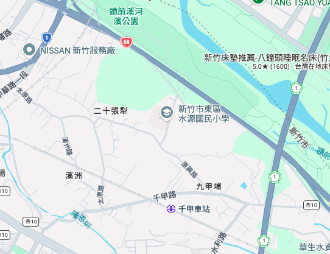

正在建立巨蛋園區場館、街區與看台細節
目前無法開啟 3D 畫面
請使用支援 WebGL 的瀏覽器，或透過下方導覽閱讀四項政策。
新竹智慧巨蛋
新竹市長候選人 何志勇 政策構想
3D 概念園區
HSINCHU SMART DOME
園區全景
從城市主場，走進周邊生活。
15,000 人規模構想拖曳旋轉，滾輪縮放單指旋轉，雙指縮放
建築與基地配置為概念示意 v
CONCEPT MODEL
跟著導覽，兩分鐘看完四項政策
從巨蛋入口走進場內，再到園區與社區球場，最後留下你的心願。

地圖資料 ©2026 Google